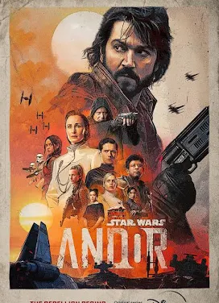
Series · Star Wars
Andor
What I love is how human the rebellion feels. It’s people making hard choices, not just a big Star Wars battle.
Outside class / a few favourites
A glimpse at the shows, anime, music, books, games and manga I keep coming back to. Some are here for the characters, some for a single song or scene I can't forget. This is just my shelf.
01 / Watch
Some are tense, some are playful, but they all make their worlds feel bigger than the screen. These notes stay clear of plot twists.

Series · Star Wars
What I love is how human the rebellion feels. It’s people making hard choices, not just a big Star Wars battle.
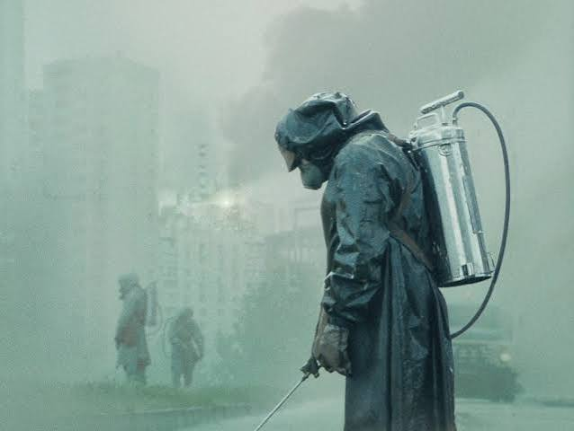
Miniseries · Drama
It’s terrifying without trying too hard. I kept thinking about how much worse things get when people are afraid to tell the truth.
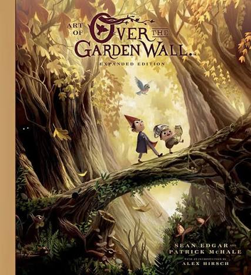
Animated miniseries
This feels like wandering into an old storybook: weird, a bit eerie, and somehow comforting at the same time.
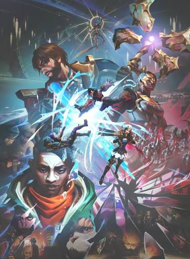
Animated series
The art and music pulled me in, but the people and their messy choices are what made it stay with me.
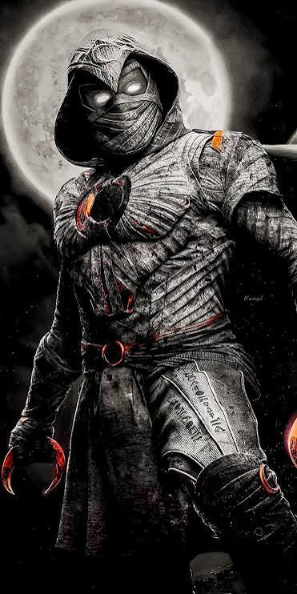
Series · Marvel
I like the identity mystery as much as the action. It feels stranger and more personal than a usual superhero show.
02 / Watch
I love how animation can make scale, place and emotion feel immediate, whether the story is intimate or enormous.
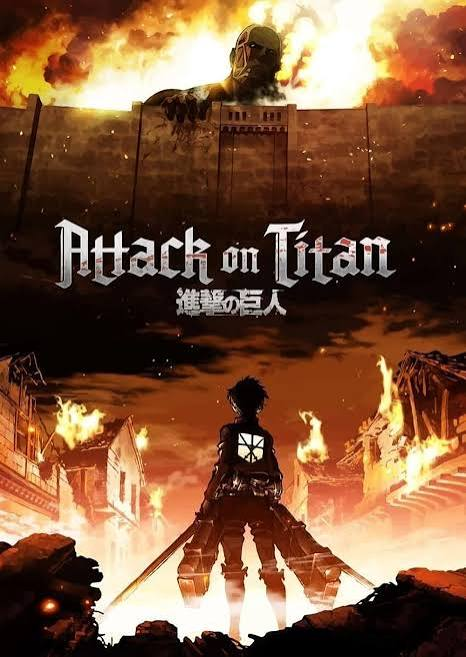
Anime series
The scale keeps growing, but it never stops feeling about people. I love how it makes me think about freedom from different sides.
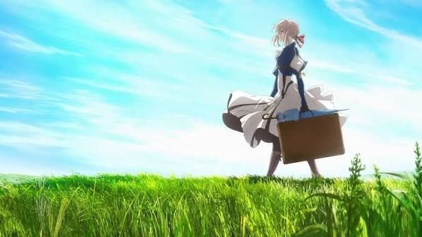
Anime series
The letters get me because they say things people struggle to say themselves. Even the quiet moments feel huge with that music.
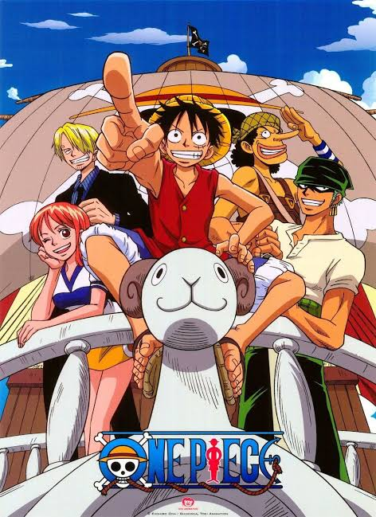
Anime series
The world is massive, but the crew is why I stay. They’ve been through enough together that every place feels connected.
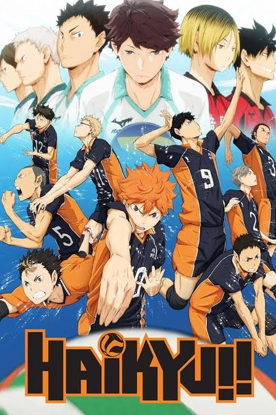
Anime series
It somehow makes a single point feel enormous. I like seeing the work and trust behind it, not only the win.
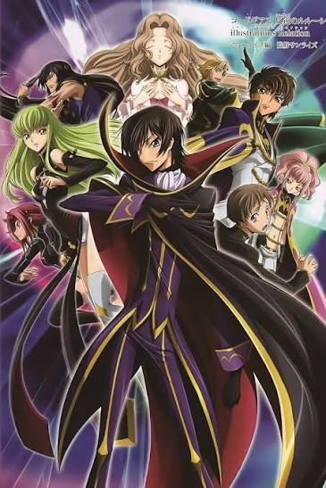
Anime series
I enjoy the mind games, but what stays is the weight behind each decision. Clever plans don’t come free.
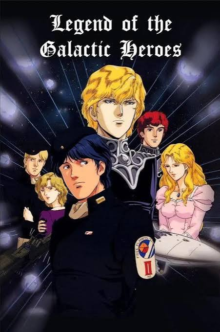
Anime series · Space opera
I like that it gives people on different sides room to be human. The politics feel big without making everything simple.
03 / Listen
I usually notice melody first. Soundtracks and songs can bring an entire mood back in seconds, and an album can be its own place to spend time.
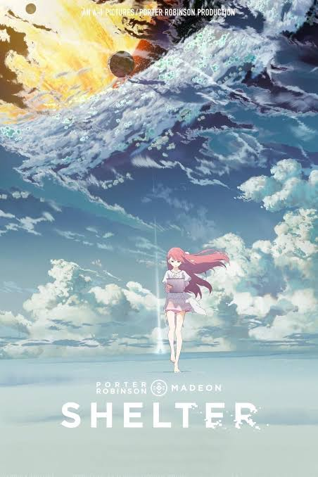
Song · Porter Robinson & Madeon
The melody hits first, then the animated short adds another feeling to it. I always come back for that mix.
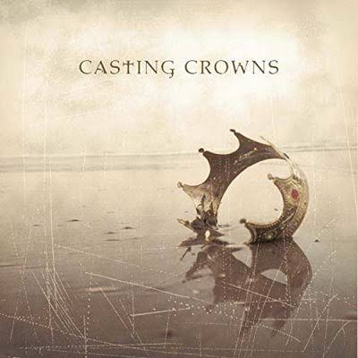
Song · Casting Crowns
This one makes me stop and think for a minute. It’s simple and sincere in a way I keep returning to.
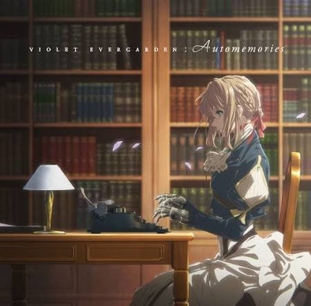
Score · Evan Call
No lyrics needed here. The melody carries the feeling on its own, and it brings Violet Evergarden right back to me.
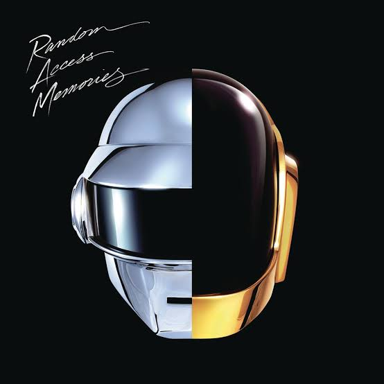
Album · Daft Punk
I love the detail in the production, but it still feels warm and alive. I want to hear the whole album, not skip around.
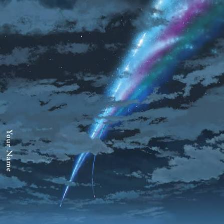
Soundtrack album · RADWIMPS
Lowkey one of the best soundtracks I've heard. It's so emotional that a few notes are enough to bring the whole film back.
04 / Read
I like having more time with a world and its people. Some of these I found through the films, then wanted to read the books too.
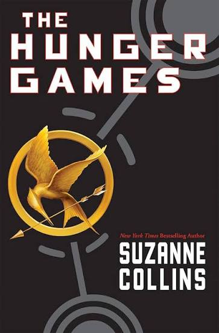
Book series · Suzanne Collins
The tension kept me reading, but the people trying to protect each other are what stayed with me.
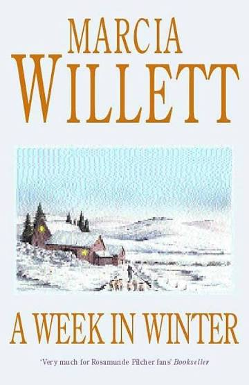
Novel · Marcia Willett
It’s quieter than most things on this shelf. I like settling into the house and all the history between the people there.
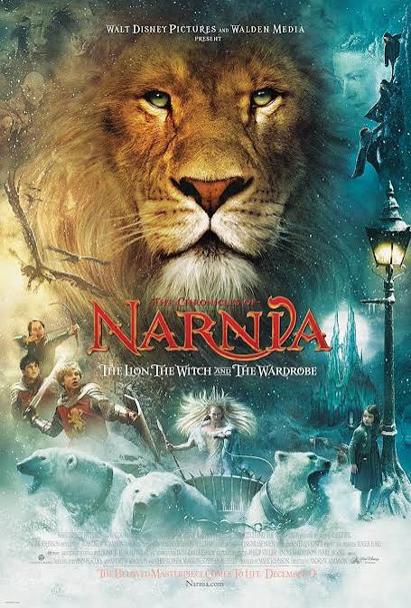
Book series · C. S. Lewis
I love that feeling of opening another door into a place I already know. Seven books make it somewhere to return.
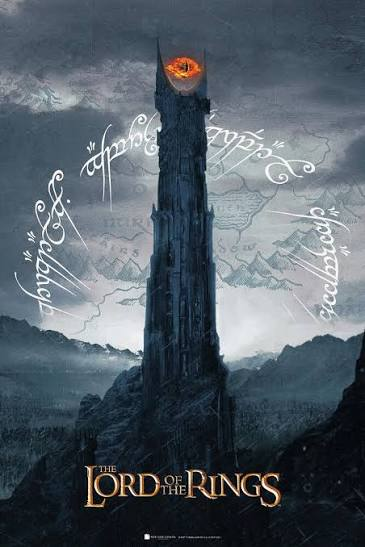
Book trilogy · J. R. R. Tolkien
I enjoyed the movies so much, then got to spend even longer in that world through the books. The journey and the friendships just don't get old for me.
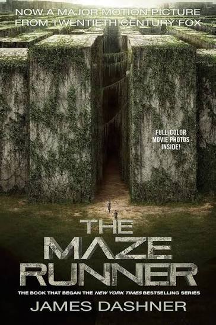
Book series · James Dashner
I had a great time with both the movies and the books. I love that feeling of trying to work out the mystery along with the characters.
05 / Play
I like games that let me sit with the characters and choices for a while, even after I'm done playing.
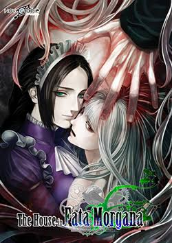
Visual novel
I like stories that change how I see their characters as they go. The gothic atmosphere makes this one hard to shake.
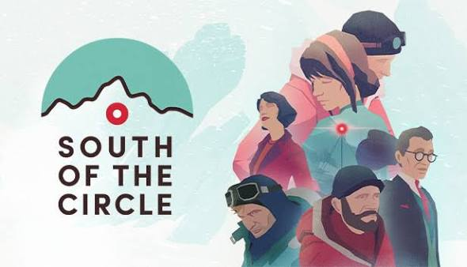
Narrative game · State of Play
The art looks calm, but the choices feel heavy. I like that contrast and how much it leaves me thinking afterward.
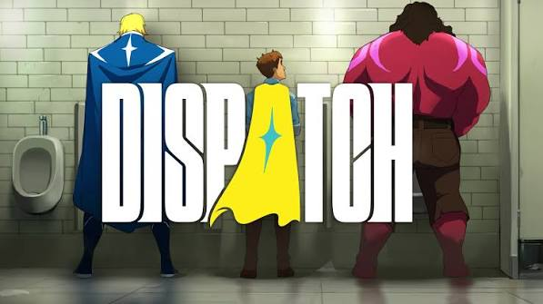
Narrative game · AdHoc Studio
The superhero setup is fun, but it’s the team, banter and choices that make me care.
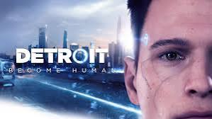
Choice-driven game · Quantic Dream
I love how much the choices matter. Even a small decision had me stopping to think about what I'd actually do.
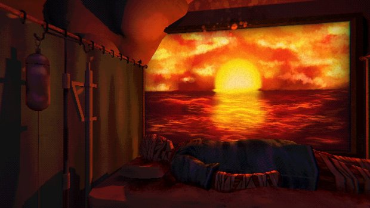
Psychological horror · Wrong Organ
This one gets under my skin. The atmosphere is so unsettling, and it trusts you to sit with what the story is saying.
06 / Read
These are the ones I wanted to keep reading long after I should've gone to sleep.
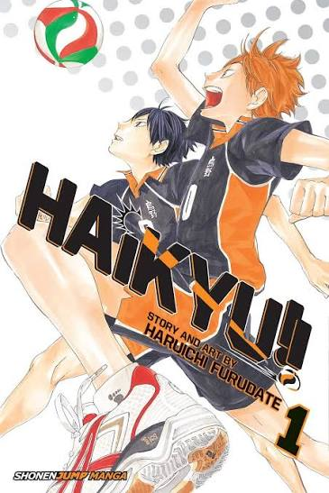
Manga · Haruichi Furudate
Absolutely loved reading it. I stayed up till 4 just to keep going; somehow every rally makes me care more about everyone on the court.
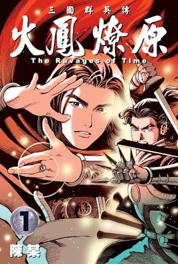
Manhua · Chan Mou
The strategy and the way people play each other is so good. The Xiapi arc was peak for me; I couldn't put it down.
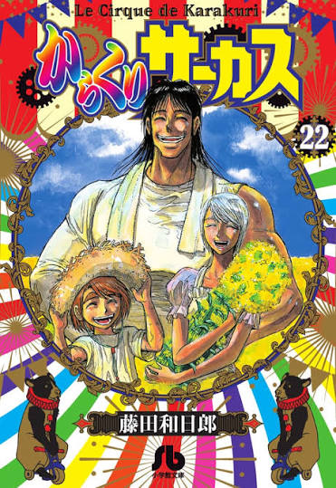
Manga · Kazuhiro Fujita
The story and characters are so good, and that ending felt biblical to me. It all comes together in a way I still think about.
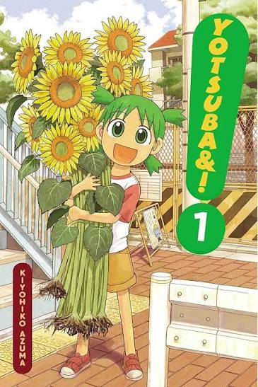
Manga · Kiyohiko Azuma
Such a wonderful slice of life. It makes ordinary days feel funny and special without needing anything huge to happen.
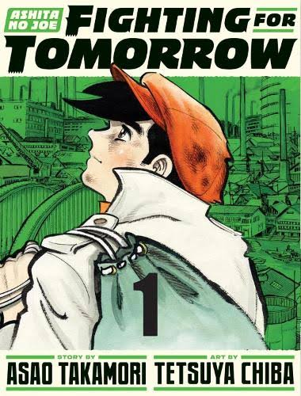
Manga · Asao Takamori & Tetsuya Chiba
Joe is a peak main character. The story earns every high and low, and the ending is one of those I'll never forget.